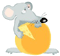

|  | Dis, tu veux un camembert? |
|---|
Ces données, "récoltées" sur CodeS-SourceS le 07/08/2006, montrent la répartition par langage des sources publiées sur ce site.
Certains langages, crédités d'un nombre de sources inférieur à 1000, sont rangés dans la
rubrique "Divers".
Il s'agit, dans l'ordre :
ASP, Graphisme, Assembleur, Python, SQL, Cold Fusion, FoxPro, PDA/PocketPC.
Trônant, sans contestation possible, sur la plus haute marche du podium, Visual Basic confirme l'emprise des produits MicroSoft (alias la "Pieuvre") dans tous les domaines liés à l'informatique. Etonnant cependant qu'ASP, qui est un dérivé du Basic, soit situé lui aux antipodes de ce classement.
Loin derrière, C/C++, le nez dans le guidon, s'accroche farouchement à une deuxième place amplement méritée, d'autant que la plupart des langages du peloton (Delphi mis à part), lui sont redevables de sa syntaxe. Malgré le nombre important de compilateurs existants (dont certains "gratuits" et d'une très grande qualité), les "développeurs" semblent désormais préférer se tourner vers des langages moins typés et d'accès plus immédiat.
En troisième position, Delphi, vaisseau Amiral de la maison Borland, est nostalgique d'une époque glorieuse où Pascal (avec le célèbre TurboPascal) rivalisait avec C/C++.
Voilà, à vous de commenter davantage ces résultats, ceux-ci étant, comme toutes statistiques
dignes de ce nom, sujets à controverses et interprétations hasardeuses.
Bon Dev...
-
http://www.lri.fr/~mbl/ENS/IG2/cours1/AntiAliassage.pdf
http://homepage.smc.edu/kennedy_john/BELIPSE.PDF
http://perception.inrialpes.fr/people/Boyer/Teaching/RICM/c2.pdf
http://www2.ift.ulaval.ca/~Dupuis/Infographie/Chap. 1 - Concepts de base en infographie/Chap. I Exercices resolus.pdf
http://www.mini.pw.edu.pl/~kotowski/Grafika/RasterDrawing/Index.html